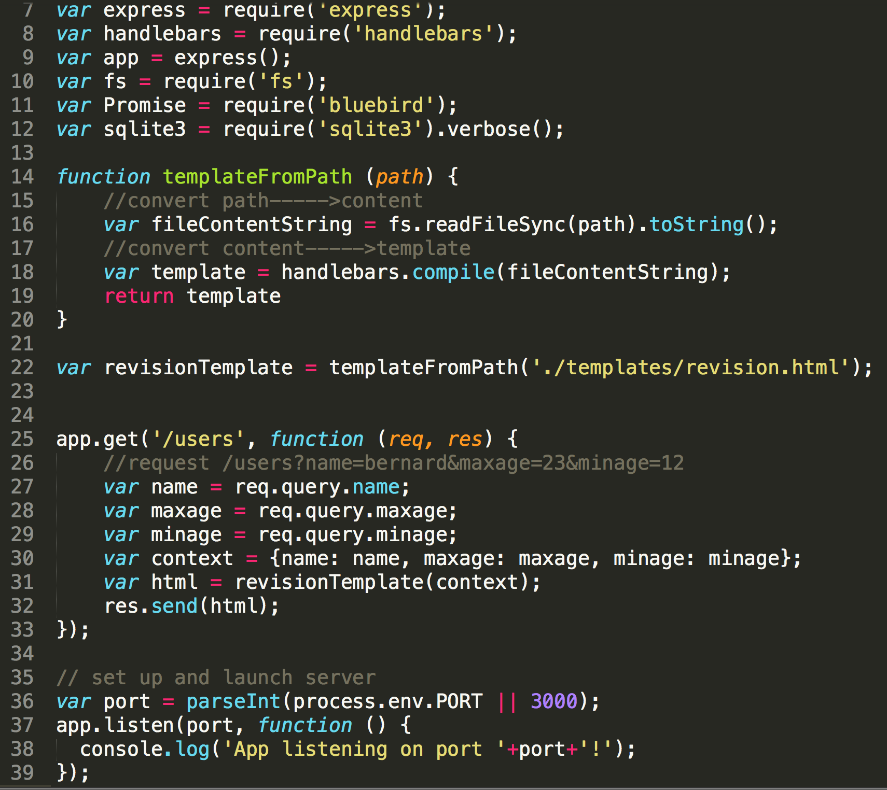

Request
Request (see the function above) is an object and as such has various properties, as well as methods, that can be accessed.
For example, imagine that you would like to access the parameters from a url. To find out how to do this, check the Express docs under Request and you'll see there is a property 'req.params'. This property is an object containing properties mapped to the named route “parameters”. For example,
if you have a route such as /user/:name, you can access the 'name' property using req.params.name. This object defaults to {}.
To return the params from the url: /user/naughty, the following code could be used:
app.get('/user/:name', function (req, res) {
res.send('you are ' + req.params.name);
});
This would return display on the page:
--> you are naughty.
Display the result of a query string
This time, imagine that you'd like to display the result of a longer query string. Again, you need to check the Express API docs. Under Request you'll see there is a property 'req.query'.
It tells us: req.query: This property is an object containing a property for each query string parameter in the route. If there is no query string, it is the empty object, {}.
Imagine the URL is as follows: localhost:3000/users?name=bernard&maxage=23&minage=12
There are a number of steps that need to be carried out in order to display the results from this query. These are:
- Create the empty app.get function e.g.
app.get('/users', function (req, res) { .......
});
- Inside, create variables to hold each of the parameters e.g. var maxage = req.query.maxage
- Create a variable to hold the context in the template where the results of these variables need to be inserted. e.g.
var context = {name: name, maxage: maxage, minage: minage};
- Create a variable to hold the result of passing this context into the template function e.g.
var html = revisionTemplate(context);
- Outside of this function, create a function to turn the content of the template file, in this case revision.html into a template using handlebars. See function templateFromPath below.
- Save the results of this function, with the input path set to the appropriate file, into a variable, in this case,
var revisionTemplate = templateFromPath('./templates/revision.html);
- Finally, create a response within app.get so that the resulting html can be sent back to the user e.g.
res.send(html);
The code is as follows:
